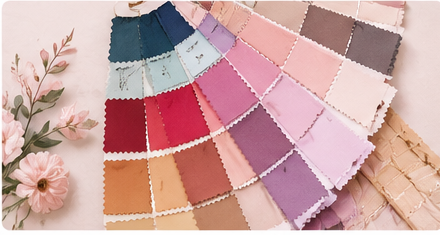
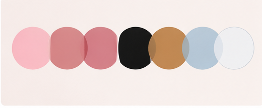

fashion world
🎨 تنسيق الألوان
اختيار الألوان المتناسقة يساعد على إنشاء تصميم جميل ومميز.

- الوردي والبيج:ألوان ناعمه و هادئه
- الأسود والذهبي :ألوان أنيقة ومميزة
- الأزرق و الابيض :ألوان هادئه و منعشه
- البنفسجي و الوردي:ألوان جميلة و مليئه بالحيويه
